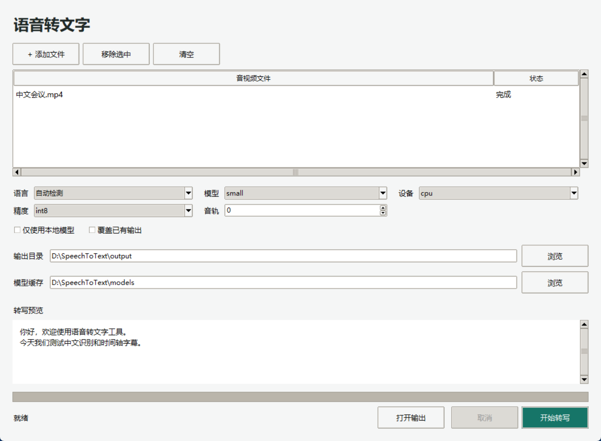

一、先确定你需要做什么
只想把音视频转成文字：拿到 SpeechToText-windows-x64.zip 后，直接看第四节。你不需要安装 Python，也不需要运行出包脚本。
想自己生成可以分享的应用程序：先看第二节准备环境，再双击 build.cmd。这就是“一键编译出包”。
源码压缩包和应用压缩包不是一回事。GitHub 的 “Source code” 只有源码，不能当作已编译的应用使用。
二、首次准备（仅出包者需要）
- 确认电脑系统。打开 Windows“设置 → 系统 → 关于”，确认是 64 位 Windows。建议至少 8 GB 内存，并预留 5 GB 磁盘空间。
- 把源码完整解压。右键源码 ZIP，选择“全部解压”。建议放在普通可写目录，例如
D:\SpeechToText，不要放到Program Files，不要直接在压缩包里运行。 - 找到正确文件夹。如果下载的是整个
ai-tools仓库，进入其中的speech-to-text文件夹。你应该同时看到build.cmd、build.ps1、src和docs。 - 准备 Python 3.13 的 64 位版本。电脑已有正确版本时脚本会自动找到。如果有新版 Python 安装管理器，脚本会尝试自动下载。没有管理器或下载失败时，按下面的安装步骤处理。
手动安装 Python（鼠标操作）
- 打开 Python 官方 Windows 下载页面，选择 Python 3.13 系列的 Windows installer (64-bit)。不要选择 3.14、32 位或 embeddable package。
- 运行安装程序。如果出现 Add python.exe to PATH，勾选它，然后选择 Install Now。保留默认的 Tcl/Tk、pip 和 Python Launcher 组件。
- 建议安装到自己的用户目录。无需为本工具使用管理员权限。
- 安装完成后关闭旧的构建窗口，重新双击
build.cmd。不需要打开编辑器，也不需要手动输入命令。
首次安装依赖需要联网。编译出包本身不会下载语音模型，也不会上传你的音视频。
三、双击一次，生成应用压缩包
- 双击
build.cmd。不要双击build.ps1，它可能被系统用记事本打开。 - 等待窗口运行。会显示下面的七个阶段。首次依赖下载、应用打包和 ZIP 压缩可能需要数分钟或更久。窗口仍在输出内容时不要关闭，不要重复双击。
- 看到“出包成功”。脚本会显示 ZIP 完整路径，并自动打开
dist文件夹。按任意键关闭构建窗口即可。 - 确认产物。找到
SpeechToText-windows-x64.zip，这就是可以分享的应用包。旁边的.sha256是完整性校验文件，建议一起保存。
[1/7] 检查 Python 和构建环境 [2/7] 下载并安装锁定的构建依赖 [3/7] 自动检查代码并运行测试 [4/7] 生成 Windows 应用程序 [5/7] 验证生成的应用程序 [6/7] 放入使用说明和构建记录 [7/7] 生成 ZIP 并验证内容 ========== 出包成功 ==========
脚本会自动安装构建依赖，无需自行安装 FFmpeg、Visual Studio、CUDA 或编写代码。出现测试失败时会停止出包，不会告诉你“成功”。
“出包成功”表示这次构建及已执行的工程检查通过，不等于正式业务封板；干净电脑和真实业务录音仍需另行验收。
不要因为 dist 中有旧文件，就认为这次构建成功。只以窗口显示“出包成功”为准。新 ZIP 会先验证，再替换旧 ZIP。
如果出包失败
窗口会显示“出包失败”和日志完整路径。日志存放在项目的 .artifacts\logs 文件夹。把最新的 build-日期-时间.log 发给维护人员，并参考第六节处理；不要分发失败后遗留的应用目录。
同时双击两次时，第二个窗口会提示已有任务在运行。等待第一个结束即可，不需要删除锁文件。
四、把音视频转成文字与字幕
- 右键应用 ZIP，选择“全部解压”。进入解压后的
SpeechToText文件夹，双击SpeechToText.exe。 - 点击“添加文件”，选择 MP3、MP4 或 MKV 文件，可以一次添加多个。
- 语言选择“自动检测”即可，也可明确选择中文或 English。模型建议保留
small，设备保留cpu，精度保留int8。 - 通过“输出目录 → 浏览”选择保存结果的文件夹。默认不覆盖已有结果。
- 点击“开始转写”。首次使用需要联网下载模型，下载完成后会自动转写。此时不要勾选“仅使用本地模型”。
- 文件显示“完成”后，点击“打开输出”。每个输入文件会生成 TXT、SRT 和 VTT 三个同名文件。

| 结果文件 | 用途 | 怎样打开 |
|---|---|---|
会议.txt | 普通文字，没有字幕时间行。 | 双击，用记事本打开。 |
会议.srt | 带时间的字幕，适合常见播放器。 | 在 VLC 等播放器中打开原视频，选择“字幕 → 添加字幕文件”，选对应 SRT。 |
会议.vtt | WebVTT 字幕，适合支持它的网页或视频软件。 | 按目标软件的“导入字幕”功能添加。 |
字幕时间对应原音视频播放时间，包括音轨延迟。文字识别和语句边界仍可能有误差，正式使用前请校对。文件最多 2 小时。
多音轨视频默认选择第 0 条音轨；如果识别的语言不对，可尝试音轨 1 或 2。普通 MP3 不需要修改音轨。
点击“取消”后需等待当前模型调用返回，不保证立即停止。已经完成的结果不会删除。
以后离线使用
在同一电脑成功下载过同一模型之后，可以勾选“仅使用本地模型”。模型缓存目录不能随意清空或更换。
应用 ZIP 不含模型。另一台电脑首次使用仍需联网，除非同时迁移完整模型缓存。在原电脑复制“模型缓存”显示的完整文件夹，在新电脑把“模型缓存”设为该文件夹，再勾选本地模型。
六、遇到问题怎么处理
| 看到的情况 | 处理办法 |
|---|---|
| 没有找到 Python 3.13 / 自动安装失败 | 按第二节从 Python 官网安装 3.13 的 64 位版本，再双击 build.cmd。 |
| 下载依赖超时、网络错误 | 确认浏览器可以正常联网，稍后重试；公司网络需联系管理员。不要反复点击，也不要从不可信网站下载替代程序。 |
| 构建环境版本不兼容 | 关闭构建窗口，将项目中的 .build-venv 文件夹改名为 .build-venv-old，再双击 build.cmd。只改这个构建环境目录，不要删除音视频或 output。 |
| 测试失败 / DLL 初始化失败 | 不要修改代码或跳过测试；把最新日志交给维护人员，等待修复。 |
| 出包目录打不开 / 权限不足 / 磁盘满 | 把源码完整复制到可写目录，确保空间充足，再重试。不要放在压缩包内、系统目录或受限制的网盘目录。 |
| 首次转写停在“Loading model” | 通常正在下载模型或载入内存，需要等待。若最终失败，检查网络；尚未下载模型时不要勾选本地模型。 |
| 提示 Output already exists | 换一个输出文件夹，或确认旧结果不再需要后勾选“覆盖已有输出”。不同目录中的同名媒体也会冲突。 |
| 提示 no audio track / Unable to decode | 文件可能无音轨、损坏、加密或编码不支持。先确认播放器能播放声音，再更换正常文件；不支持绕过加密。 |
| 全部显示“无语音”或识别不准确 | 检查原文件声音、音轨和语言设置。噪音、音乐、多人重叠或轻声会影响识别，尝试更清楚的录音或更大的模型并人工校对。 |
| 程序提示缺少文件 / DLL | 重新完整解压发行 ZIP，保留 _internal。若仍失败，把提示截图交给维护人员，不要单独下载来历不明的 DLL。 |
给维护人员提供哪些信息
提供最新构建日志、错误窗口截图、Windows 系统版本，以及是“出包失败”还是“转写失败”。不要未经许可发送敏感录音；日志可能包含本地文件路径，分享前检查。
完整集成验收包有 acceptance.cmd。受维护人员委托时，可在另一台未安装 Python 的 Windows 电脑双击运行，首次需联网下载模型；把桌面 SpeechToText-Acceptance 文件夹里的结果交回。已安装 Python 的电脑不作为干净机证据。